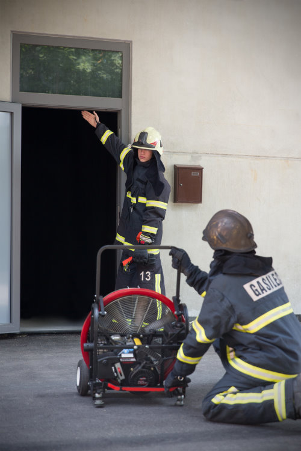

Prezračevanje je element gasilskega dela, s katerim skušamo zagotoviti večjo varnost posredovalcev in ponesrečencev. Poleg povečane varnosti ob uporabi tehnike in taktike prezračevanja zagotavljamo:
- hitrejše napredovanje napadalnih skupin
- hitrejšo in uspešnejšo rešitev ujetih in ponesrečenih
- povečanje preživetja ujetih
- lažjo določitev mesta požara
- zmanjševanje požarne škode
Dva pojava izmed najnevarnejših, ki spremljajo požare v zaprtih prostorih, sta dim in vročina. Dim otežuje reševanje, saj je strupen, in zmanjšuje vidljivost. Vročina povečuje nevarnost požarnega preskoka in povratnega ognja, povečuje telesno temperaturo gasilcev, ob zadostni koncentraciji kisika pa poskrbi za hitrejše širjenje požara. Da bi omenjene nevarnosti čim bolj zmanjšali, se v gasilstvu uporablja naprave za prezračevanje.
Najbolj preprosta definicija prezračevanja bi bila, da je to odstranjevanje dima in vročih plinov iz zaprtih prostorov. V gasilstvu se prezračevanje deli na umetno in naravno.
Naravno prezračevanje se opravlja po načelu vleka zraka skozi objekt in termike ali termičnega vzgona zaradi temperaturnih razlik pri požaru.
Umetni načini prezračevanja so nadtlačno, podtlačno in hidravlično prezračevanje. Pri nadtlačnem in podtlačnem potrebujemo namenske strojne naprave, kot so prezračevalniki in naprave za vlek dima dimovlek. Za pogon teh naprav potrebujemo določen energent (bencin, elektriko, vodo), in določeno skupino, ki upravlja omenjene naprave. V vseh primerih je treba narediti vhodno in izhodno odprtino. Obenem mora biti prezračevanje usklajeno z aktivnostmi napadalcev v objektu, upoštevati se mora vremenske razmere, predvsem smer vetra in moč. Pomembni so tudi oblika in prostori v zgradbi, ki jo prezračujemo. Pri tem moramo paziti, da zagotovimo učinek prezračevanja (nadtlak/podtlak) in da dim in vroči plini ne preideta v druga območja in prostore. S tem lahko ogrozimo napadalne skupine, ljudi, ki so še v objektu, in povečamo možnost za širjenje požara.
Omenjene naprave za prezračevanje se uporablja pri različnih vrstah intervencij in v različnih časovnih obdobjih posredovanja. Ko v postopek dela vključimo prezračevanje, je treba odgovoriti na številna vprašanja, ki nas vodijo v pravilne odločitve in uporabe ustreznega načina prezračevanja.

Kakšno prezračevanje je za objekt ali prostor najkakovostnejše?
Kaj bomo pridobili glede na vrsto prezračevanja?
Kdaj začeti prezračevanje?
Ali bomo še vedno pravi gasilci, če bomo nevarnost odstranili?
Kdaj naj začnemo prezračevati, da ne bomo poslabšali razmer?
Kakšen prezračevalnik naj uporabljam?
Odgovori so morda za marsikoga pričakovani in jasni, a verjamem, da kljub več vrstam prezračevanja potrebujemo oprijemljive postopke, ki jih bomo izpolnjevali. Prepričati je treba tudi najbolj skeptične in izpolniti pravila, ki jih lahko imenujemo tudi varnostni postopki ali postopki za pomoč pri odločitvah, vodenju in načrtovanju.